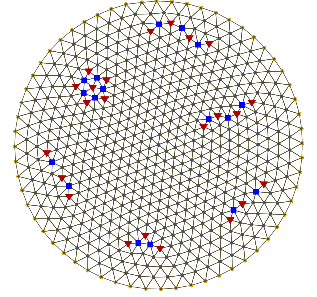

|
|
Mistral
Self-adjusting search tree searching for 58 74 68 6D 6E
|
|
|
|
|
|
|
|
|
|
|
|

I am currently an undergraduate student of mathematics. Aiming to pursue graduate studies at either the Research Institute for Mathematical Sciences
at the University of Kyoto or the Graduate School of Mathematical Sciences at the University of Tokyo.
Ich studiere derzeit Mathematik im Bachelor-Studiengang. Angestrebt werden Graduiertenstudien am Forschungsinstitut für mathematische Wissenschaften
der Universität Kyoto oder an der Graduiertenschule für mathematische Wissenschaften der Universität Tokio.
Je suis actuellement étudiant en mathématiques. Vise à poursuivre des études supérieures à l'Institut de recherche en sciences mathématiques de
l'université de Kyoto ou à l'École supérieure de sciences mathématiques de l'université de Tokyo.
Broadly interested in the fields of combinatorics, representation theory, complex geometry and mathematical physics.
Allgemeines interesse an den Bereichen Kombinatorik, Darstellungstheorie, Komplexe Geometrie und Mathematische Physik.
Largement intéressé par les domaines de la combinatoire, la théorie des représentations, de la géométrie complexe et de la physique mathématique.
« Ever tried. Ever failed. No matter. Try again. Fail again. Fail better. »
Samuel Barclay Beckett, « Worstward Ho »
« Immer versucht. Immer gescheitert. Egal. Wieder versuchen. Wieder scheitern. Besser scheitern. »
Samuel Barclay Beckett (Übersetzung von Erika Tophoven), « Aufs Schlimmste zu »
« D'essayé. De raté. N'importe. Essayer encore. Rater encore. Rater mieux. »
Samuel Barclay Beckett (traduit par Edith Fournier pour les Editions de Minuit), « Cap au pire »


Creative Writing
Kreatives Schreiben
Écriture créative
-
Bona Fide
Oregairu fanfic that I'm working on.
Oregairu fanfic, an der ich arbeite.
Oregairu fanfic sur lequel je travaille.
Analysis
Analysis und Wahrscheinlichkeitstheorie
Analyse et théorie des probabilités
- Walter Rudin - Principles of Mathematical Analysis
- Manfred Leopold Einsiedler, Thomas Ward - Functional Analysis, Spectral Theory, and Applications
- Raghavan Narasimhan - Complex Analysis
- Manfred Leopold Einsiedler, Thomas Ward - Ergodic Theory: with a view towards Number Theory
- Anton Deitmar, Siegfried Echterhoff - Principles of Harmonic Analysis
Algebra
Algebra
Algèbre
- Paul Richard Halmos - Finite Dimensional Vector Spaces
- Ernest Borissowitsch Winberg - A Course in Algebra
- Anthony William Knapp - Basic Algebra
- Anthony William Knapp - Advanced Algebra
- Nathan Jacobson - Basic Algebra I, II
- Michael Francis Atiyah, Ian Grant Macdonald - Commutative Algebra
- Joseph Daniel Harris, William Edgar Fulton - Representation theory: A first course
Geometry, Topology and Number Theory
Geometrie, Topologie und Zahlentheorie
Géométrie, topologie et théorie des nombres
- Klaus Jänich - Topologie
- John Willard Milnor - Topology from the Differentiable Viewpoint
- Loring Tu - An Introduction to Manifolds
- Loring Tu - Differential Geometry: Connections, Curvature, and Characteristic Classes
- Shoshichi Kobayashi, Katsumi Nomizu - Foundations of Differential Geometry I, II
- Igor Rostislawowitsch Schafarewitsch - Basic Algebraic Geometry 1, 2
- Daniel Huybrechts - Complex Geometry: An Introduction
- Qing Liu - Algebraic Geometry and Arithmetic Curves
- Gary Cornell, Joseph Hillel Silverman - Arithmetic Geometry
- Senon Iwanowitsch Borewitsch, Igor Rostislawowitsch Schafarewitsch - Number Theory
- Maruti Ram Pedaprolu Murty, Jody Esmonde - Problems in Algebraic Number Theory
Mathematical Physics
Mathematische Physik
Physique mathématique
- Peter Szekeres - A Course in Modern Mathematical Physics: Groups, Hilbert Space and Differential Geometry
- Wladimir Igorewitsch Arnol'd - Mathematical Methods of Classical Mechanics
- Stephen Hawking, George Francis Rayner Ellis - The Large Scale Structure of Space-time
- Robert M. Wald - General Relativity
- Brian C. Hall - Quantum Theory for Mathematicians
, via Wikimedia Commons" />
, über Wikimedia Commons" />
, via Wikimedia Commons" />
Computer programs
Computerprogramme
Programmes informatiques

-
Big List of Problems :
HTML
Below are some notes I took during my undergraduate studies. Above is a big list of problems I've collected over the years.
Im Folgenden finden Sie einige Notizen, die ich während meines Bachelor-Studiums gemacht habe. Oben ist eine große Liste
von Problemen, die ich im Laufe der Jahre gesammelt habe.
Vous trouverez ci-dessous quelques notes que j'ai prises pendant mes études de premier cycle. Ci-dessus, une grande liste
de problèmes que j'ai rassemblés au fil des ans.
Year 1
1. Jahr
1ère année
Semester 1
1. Semester
Semestre 1
Semester 2
2. Semester
Semestre 2
-
Real Analysis 1
-
Differential Equations
-
Mechanics 2
-
Classical Electrodynamics
Year 2
2. Jahr
2ème année
Semester 3
3. Semester
Semestre 3
-
Theory of Real Functions
-
Ring Theory and Linear Algebra 1
-
Numerical Methods
-
General Relativity
-
Quantum Mechanics 1
-
Quantum Mechanics 2
Semester 4
4. Semester
Semestre 4
-
Riemann Integration and Series of Functions
-
Ring Theory and Linear Algebra 2
-
Multivariate Calculus
-
Quantum Mechanics 3
-
Relativistic Quantum Mechanics
-
Field Quantisation
Year 3
3. Jahr
3ème année
Semester 5
5. Semester
Semestre 5
-
Partial Differential Equations
-
Metric Space and Complex Analysis
-
Linear Programming and Game Theory
-
Probability and Statistics
-
Quantum Electrodynamics
-
Quantum Chromodynamics
-
Nuclear Models
Semester 6
6. Semester
Semestre 6
-
Group Theory 2
-
Differential Geometry
-
Point Set Topology
-
Combinatorics and Graph Theory
-
Gauge Theory of Weak Interactions
-
Superstring Perturbation Theory
-
Quantum Fields and Strings
Year 4
4. Jahr
4ème année
Semester 7
7. Semester
Semestre 7
-
Measure Theory
-
Lie Groups and Representation Theory
Semester 8
8. Semester
Semestre 8
-
Functional Analysis
-
Commutative Algebra and Algebraic Geometry
|